|
Research
I'm interested in reinforcement learning (RL), information theory, and deep learning with an eye toward understanding and creating intelligent agents. My PhD thesis ("Optimization of MILES") focussed on applications of the information bottleneck (IB) in supervised, unsupervised, and reinforcement learning. In the past, I've also worked on quantum information theory and computational neuroscience.
|
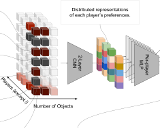
|
A Neural Architecture for Designing Truthful and Efficient Auctions
Andrea Tacchetti,
DJ Strouse,
Marta Garnelo,
Thore Graepel,
Yoram Bachrach
arxiv, 2019
arxiv
We present a deep learning approach to auction design that guarantees truthfulness (bidders are incentivized to be honest) and efficiency (whoever wants the item most gets it). We focus on social utility maximizing auctions, where the goal is to achieve the former constraints while placing as little economic burden on the bidders as possible.
|
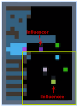
|
Social Influence as Intrinsic Motivation for Multi-Agent Deep Reinforcement Learning
Natasha Jaques,
Angeliki Lazaridou,
Edward Hughes,
Caglar Gulcehre,
Pedro A. Ortega,
DJ Strouse,
Joel Z. Leibo,
Nando de Freitas
International Conference on Machine Learning (ICML), 2019 (best paper honorable mention)
arxiv /
openreview
We reward agents for influencing the actions of other agents, and show that this gives rise to better cooperation and more meaningful emergent communication protocols.
|
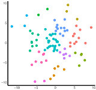
|
The information bottleneck and geometric clustering
DJ Strouse,
David Schwab
Neural Computation (NECO), 2019
pdf /
neco /
arxiv /
code /
bibtex
We show how to use the (deterministic) information bottleneck to perform geometric clustering, introducing a novel information-theoretic model selection criterion. We show how this relates to and generalizes k-means and gaussian mixture models (GMMs).
|
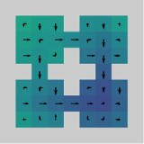
|
InfoBot: Transfer and Exploration via the Information Bottleneck
Anirudh Goyal,
Riashat Islam,
DJ Strouse,
Zafarali Ahmed,
Hugo Larochelle,
Matthew Botvinick,
Sergey Levine,
Yoshua Bengio
International Conference on Learning Representations (ICLR), 2019
openreview /
arxiv
We train agents in multi-goal environments with an information bottleneck between their goal and policy. This encourages agents to develop useful "habits" that generalize across goals. We identify the states where agents must deviate from their habits to solve a task as "decision states" and show that they are useful targets for an exploration bonus.
|
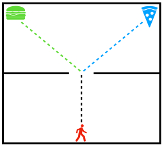
|
Learning to share and hide intentions using information regularization
DJ Strouse,
Max Kleiman-Weiner,
Josh Tenenbaum,
Matt Botvinick,
David Schwab
Neural Information Processing Systems (NIPS), 2018
arxiv /
nips /
code /
bibtex
We train agents to cooperate / compete by regularizing the reward-relevant information they share with other agents, enabling agents trained alone to nevertheless perform well in a multi-agent setting.
|
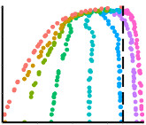
|
The deterministic information bottleneck
DJ Strouse,
David Schwab
Neural Computation (NECO), 2017 & Uncertainty in Artificial Intelligence (UAI), 2016
pdf /
arxiv /
code /
uai /
neco /
bibtex
We introduce the deterministic information bottleneck (DIB), an alternative formulation of the information bottleneck that uses entropy instead of mutual information to measure compression. This results in a hard clustering algorithm with a built-in preference for using fewer clusters.
|
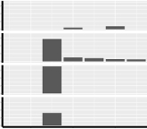
|
Efficient use of discrete latent variables using the deterministic information bottleneck
DJ Strouse,
David Schwab
unpublished note
note
We describe how to use the variational deterministic information bottleneck to regularize discrete latent variable models, encouraging the use of as few latent variables as possible for a given level of performance.
|
|
Neuroscience
|
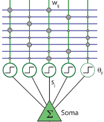
|
How Dendrites Affect Online Recognition Memory
Xundong Wu,
Gabriel Mel,
DJ Strouse,
Bartlett Mel
PLoS Computational Biology, 2019
plos
We study the optimal conditions for online recognition memory in a biologically-inspired neural network with "dendrite-aware" learning rules.
|
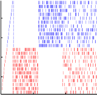
|
Using neural networks to understand the computational role of dendrites
DJ Strouse,
Balazs Ujfalussy,
Mate Lengyel
Computational and Systems Neuroscience (Cosyne), 2012 & 2013
2012 poster & abstract /
2013 poster & abstract /
master's thesis /
why
We fit neural network models to single neuron data to understand the computational role of dendrites in integrating their synaptic input.
|
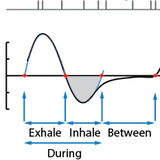
|
Behaviorally-locked structure in a sensory neural code
DJ Strouse,
Jakob Macke,
Roman Shusterman,
Dima Rinberg,
Elad Schneidman
Sensory Coding & the Natural Environments (SCNE), 2012
abstract /
poster
We study the olfactory neural code in mice and find that much of the information about the stimulus is only decodable when interpreting neural activity relative to the sniff phase, providing evidence for the importance of considering sensory sampling behavior when interpreting neural codes.
|
|
Physics
|
|
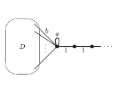
|
Levinson's theorem for graphs
Andrew Childs,
DJ Strouse
Journal of Mathematical Physics (JMP), 2011
arxiv /
jmp /
talk
We prove an analog of a classic result in quantum scattering theory for the setting of scattering on graphs. The goal is to provide additional tools for designing quantum algorithms in this setting.
|
|